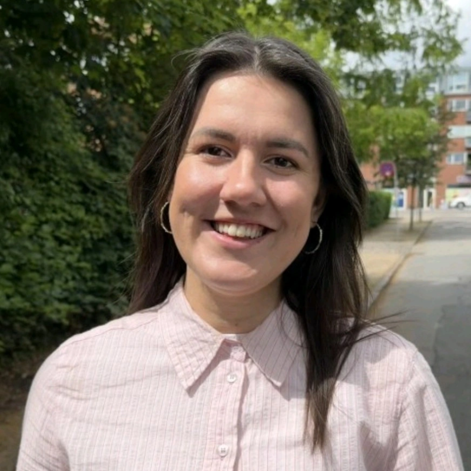

Diplomingeniør · UX · Aarhus
Jeg kombinerer en teknisk ingeniørbaggrund med brugercentreret design — og skaber løsninger der faktisk fungerer for dem, der bruger dem.

Jeg er nyuddannet diplomingeniør i Proces og Innovation fra DTU med ca. 2 års erfaring med UX inden for hearingteknologi hos Demant. Jeg trives i krydsfeltet mellem teknisk kompleksitet og menneskelige behov.
Min baggrund giver mig en dobbeltkompetence: jeg kan tale med ingeniørerne og forstå systemerne — og samtidig holde brugerens perspektiv i fokus.
Jeg er nyuddannet diplomingeniør i Proces og Innovation fra DTU. Gennem mit studie og særligt min tid hos Demant har jeg specialiseret mig i UX — fra brugerresearch og workshopfacilitering til prototyping og formidling af indsigter til beslutningstagere.
Det, der driver mig, er krydsfeltet mellem det tekniske og det menneskelige. Min ingeniørbaggrund betyder, at jeg forstår systemerne og kan tale med udviklere og specialister — og samtidig holder jeg altid fast i, at teknologi kun skaber værdi, når den faktisk fungerer for de mennesker, der bruger den.
Tidligere har jeg arbejdet hos LiqTech og Grundfos, og jeg er bosat i Aarhus. Når jeg ikke arbejder, finder du mig ofte til floorball, på løbeturen eller fordybet i et strikkeprojekt.
Er du på udkig efter en UX'er med ingeniørblik? Så hører jeg gerne fra dig — uanset om det er en konkret rolle eller bare en god snak.